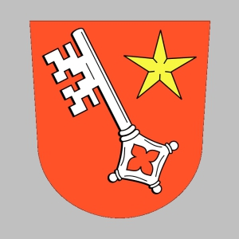
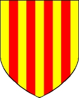

6153058656 Duke Hugh ("den store" eller "den vite") of Paris
* 898 Paris, France
† 956 Dourdan, France
Hertig av Frankerna. Greve av Paris
Blev högst 58 år
* 898 Paris, France
† 956 Dourdan, France
Hertig av Frankerna. Greve av Paris
Blev högst 58 år

12306117312 King Robert I of France
* omkring 866 Angers, France
† 923 Soissoins, France
Kung av Frankerna. Hertig av Paris
Blev ca 57 år
* omkring 866 Angers, France
† 923 Soissoins, France
Kung av Frankerna. Hertig av Paris
Blev ca 57 år

24612234624 Duke Robert (the Strong) of France
* 820 Anjou, France
† 866 Brisarthe, Les Hauts-d´Anjou, France
Duke, Markgreve, Greve Se Notering!
Blev högst 46 år
* 820 Anjou, France
† 866 Brisarthe, Les Hauts-d´Anjou, France
Duke, Markgreve, Greve Se Notering!
Blev högst 46 år

49224469248 Count Robert III de Wormsgau
* 785 Worms, Rheinland-Pfalz, Tyskland
† 832 Worms, Rheinland-Pfalz, Tyskland
Greve av Worms & Rheingau
Blev högst 47 år
* 785 Worms, Rheinland-Pfalz, Tyskland
† 832 Worms, Rheinland-Pfalz, Tyskland
Greve av Worms & Rheingau
Blev högst 47 år
49224469249 Walrada de Orleans
* 798 Orleans, Loiret, Frankrike
† 834 Worms, Rheinland-Pfalz, Tyskland
Blev högst 36 år
* 798 Orleans, Loiret, Frankrike
† 834 Worms, Rheinland-Pfalz, Tyskland
Blev högst 36 år
24612234625 Adelaide de Tours
* omkring 811 Tours, Indre de Loire, Centre, France
† 866 Brissarthe, Anjou, France
Blev ca 55 år
* omkring 811 Tours, Indre de Loire, Centre, France
† 866 Brissarthe, Anjou, France
Blev ca 55 år

12306117313 Queen Beatrice de Vermandois
* 880
† 931 Soissoins, France
Drottning av Frankerna. Hertiginna av Paris
Blev högst 51 år
* 880
† 931 Soissoins, France
Drottning av Frankerna. Hertiginna av Paris
Blev högst 51 år
24612234626 Count Herbert I de Vermandois
* omkring 848 Paris, France
† 907
Greve av Vermandois & Meaux & Soissoin
Blev ca 59 år
* omkring 848 Paris, France
† 907
Greve av Vermandois & Meaux & Soissoin
Blev ca 59 år
49224469252 Count Pepin II de Vermandois
* omkring 817
† omkring 850
Greve av Vermandois
Blev ca 33 år
* omkring 817
† omkring 850
Greve av Vermandois
Blev ca 33 år

24612234627 Countesse Bertha de Morvois
* omkring 845 Paris, France
† 916 Aisne, Picardie, France
Grevinna av Vermandois
Blev ca 71 år
* omkring 845 Paris, France
† 916 Aisne, Picardie, France
Grevinna av Vermandois
Blev ca 71 år
49224469254 Count Guerri I Robertians de Morvois
* omkring 820 Vermandois, France
† 866 St, Martin, Chateauneuf, Auvergne, France
Greve av Morvois
Blev ca 46 år
* omkring 820 Vermandois, France
† 866 St, Martin, Chateauneuf, Auvergne, France
Greve av Morvois
Blev ca 46 år

49224469255 Countesse Eve (Ava) de Roussillon
* omkring 820 Roussillion, Isere, France
† omkring 862 Vermandois, France
Grevinna av Morvois
Blev ca 42 år
* omkring 820 Roussillion, Isere, France
† omkring 862 Vermandois, France
Grevinna av Morvois
Blev ca 42 år